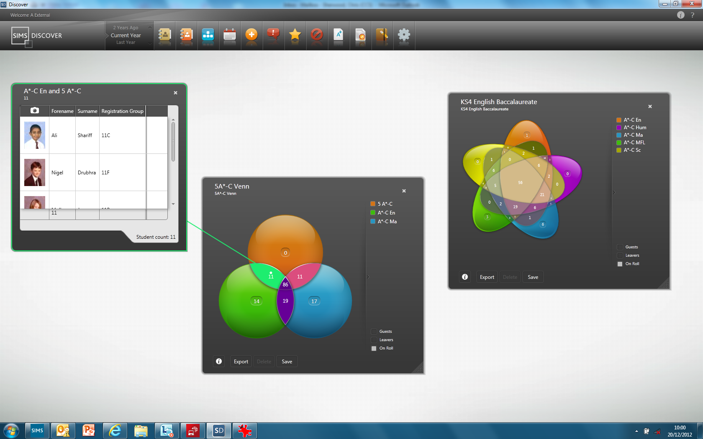
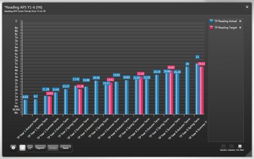
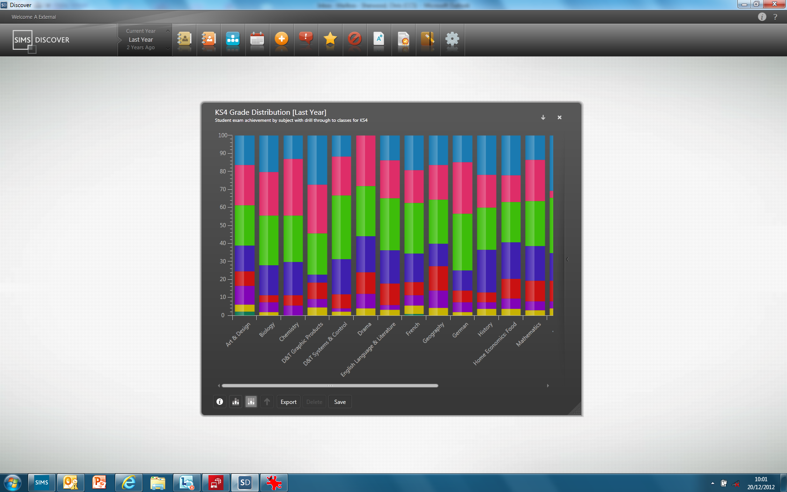

Clients
Capita
"Capita's software services (CSS) division is the leading supplier of software solutions to the public sector and social housing marketplace."
(capita-software.co.uk)
Capita Software Solutions (CSS) is a division of Capita plc. They create digital solutions used by hundreds of organisations across the private, housing, education and government sectors.
Our project is particularly concerned with one of Capita's software solutions for education called SIMS. SIMS is available for Primary and Secondary schools, and is a complete digital solution for managing a school's complex needs. A very versatile and useful tool, it is used by thousands of schools in the UK.
Microsoft
Microsoft is one of Capita's biggest software partners. It's technologies are used extensively in the Desktop and Server environment by Capita, with a lot of Capita's employees holding several official Microsoft Certifications.
In terms of our project, Microsoft is providing us with a lot of useful tools to aid in the collaboration between members, the organisation of the project and the hosting, running and in general the facilitation of our ideas.
In particular, we have access to:
- Microsoft Azure
- Microsoft Machine Learning Studio
- Visual Studio Team Services
- Office365
Project
A short description of our project would be that it is to research, experiment and prototype
the backend engine which will provide the data to Capita's web version of their Discover product.
To get a better understanding of the nature of the project, we first need to examine what SIMS Discover is...
Capita's SIMS Discover



"SIMS Discover allows you to analyse your SIMS data and present it in a variety of ways. The powerful user interface enables the data to be presented in Venn diagrams, bar charts, pie charts and line graphs, with the ability to drill down into the data. With SIMS Discover, you and your staff can analyse student data in minutes, saving valuable time." (From Capita)
Problem
SIMS Discover has proven to be a popular product in the customer base allowing customers to perform
complex queries against their data through a series of simple drag and drop operations.
However, the current platform contains technical issues that make it unsuited for use with the next generation of products that are cloud and browser based including:
1. The user interface is desktop based, written in WPF, and does not run in a browser.
2. The data engine does not scale beyond a few thousand dataitems.